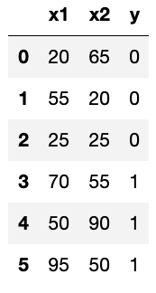
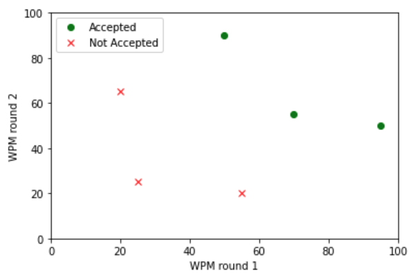
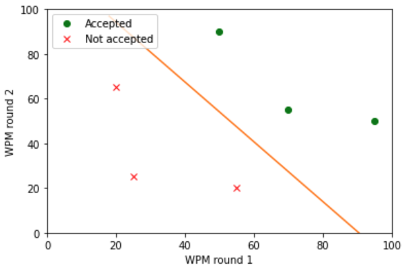

4/7/2020 - In the previous tutorial we learned about Linear Regression. We studied the math involved in the algorithm, and we also learned some basic machine learning terminology. In this tutorial we’ll be expanding on the last tutorial and looking at logistic regression. Some key terms and notation that were defined in the previous tutorial will also be used in this tutorial. If you haven’t read the previous tutorial, now is a good time to do so.
I'm writing this tutorial after completing the logistic regression portion of Andrew Ng's Machine Learning Course.
Classification
Logistic regression, like linear regression, is a supervised learning algorithm. Unlike linear regression, logistic regression is a classification problem. Classification problems have discrete valued output which means that the set of all possible output values is limited to a finite amount. In this tutorial we will be discussing the binary classification problem in which the output value can only be \(0\) or \(1\). Most of what’s mentioned in this tutorial will also apply to the multiple-class case. The example we'll work through in this tutorial will be based on the data in the table below:
When implementing logistic regression, you will always have more than six data points, but I have simplified the dataset for this example. The \(x\) values are test scores that represents the number of words typed per minute by an individual applying for an office assistant job. The y values represent whether they got the job \((1)\) or didn’t get the job \((0)\).
Visualizing the Data
In the plot below, the score from the first test will be on the x-axis, and the score from the second test will be on the y-axis. A red \(x\) means that the individual did not get the job, and a green circle means that they did get the job.
Hypothesis
Our hypothesis for logistic regression is defined as:
$$h_{\theta}(x) = g(\theta^Tx)$$
where
$$g(z) = \frac{1}{1 + e^{-z}}$$
and
$$z = \theta^Tx$$
The next equation shows all 3 of the above equations combined:
$$h_\theta(x) = \frac{1}{1 + e^{-\theta^Tx}}$$
\(g(z)\) is known as the sigmoid function. Note that \(\theta^Tx\) uses matrix multiplication. If you would like to learn more about the linear algebra used in this tutorial, check out Khan Academy. Also note that when using vectors to perform this calculation, \(x_0\) will always be \(1\).
The output for our hypothesis will always fall between \(0\) and \(1\): \(0 \leq h_\theta(x) \leq 1\). Our hypothesis will tell us the probability that the output is \(1\). For example, if our output is \(0.9\), there’s a probability of \(90\%\) that the output is \(1\) and a probability of \(10\%\) that the output is \(0\). In other words, while linear regression predicts a specific value, logistic regression predicts the probability of an outcome.
Decision Boundary
The output of our hypothesis can be translated as:
$$h_\theta(x) \geq 0.5 \implies y = 1$$ $$h_\theta(x) < 0.5 \implies y = 0$$
We use the output values to create our decision boundary which is the line separating the area between \(y=0\) and \(y=1\).
The decision boundary line on the plot above is the best fit for our data, and we know this because we used gradient descent to minimize our cost function.
Cost Function
Our cost function for logistic regression is:
$$J(\theta) = \frac{1}{m} \sum_{i=0}^{m-1} \textrm{Cost}(h_\theta(x^i), y^i)$$ $$\textrm{Cost}(h_\theta(x), y) = \textrm{-log}(h_\theta(x))\;\;\;\;\;\; \textrm{ if }y = 1$$ $$\textrm{Cost}(h_\theta(x), y) = \textrm{-log}(1 - h_\theta(x)) \textrm{ if }y = 0$$
This can be simplified to:
$$J(\theta) = -\frac{1}{m} \sum_{i=0}^{m-1} [y^i \textrm{log}(h_\theta(x^i))$$ $$+ (1 - y^i) \textrm{log}(1 - h_\theta(x^i))]$$
Gradient Descent
We use the same algorithm for gradient descent in logistic regression that we used for gradient descent in linear regression:
$$\theta_j := \theta_j - \alpha \frac{\partial}{\partial\theta_j} J(\theta)$$
After working out the partial derivative we get:
$$\theta_j := \theta_j - \alpha \frac{1}{m} \sum_{i=0}^{m-1} (h_\theta(x^i) - y^i) * x_j^i$$
Remember that we use gradient descent to minimize our cost function, and gradient descent will be repeated until convergence.
The \(\theta\) vector that we used to get our decison boundary in the example from earlier is:
$$\theta = [-41.28\;\;\;\;0.46\;\;\;\;0.34]$$
These values were obtained using gradient descent, and when we plug them into our cost function we get:
$$J([-41.28\;\;\;\;0.46\;\;\;\;0.34]) = 0.000037$$
This is the minimum value that we can get from our cost function.
Predictions
We can use our model to make predictions about future test scores. If we want to estimate whether or not test scores of \(60\) and \(75\) will be good enough to get the job, we just provide the following \(x\) vector to our model:
$$x = [1\;\;\;\;60\;\;\;\;75]$$
When we perform the computation we get:
$$h_\theta([1\;\;\;\;60\;\;\;\;75]) = 0.99$$
which means there's a \(99\%\) probability that the person would get the job.
Conclusion
I hope this tutorial was able to provide you with some insight on the math used in Logistic Regression.
Check out the next tutorial on Neural Networks.
Back to homepage